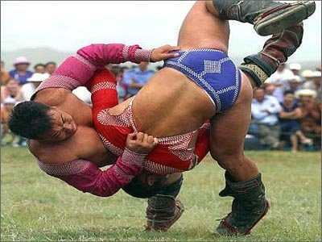

< < < Back
6 Local Fighting Traditions That You Should Consider Trying – Return Of Kings
It becomes clear now that Western society cannot tame man’s natural need for conflict. Everything remotely violent is almost forbidden now and the Western man has his natural aggressiveness repressed or shamed, while media and video games become increasingly more violent in order to alleviate his primal urges.
It is why century-old, effective fighting traditions must be implanted in the West, in addition to the already existing ones.
1. Calcio Storico Fiorentino
This tradition of a collective martial art dates back to the times of Ancient Rome and its traditional past-time, the “Harpastum.” Popular in the Roman army, it kept legionaries fit in times of peace, channeled their natural aggressiveness and developed a spirit of competition.
The Italian city of Florence is the Mecca of Calcio Storico. The four neighborhoods compete for the title of champion and thousands of fans cheer for the team of their district. The game mixes elements of handball, rugby, MMA and full-on brawl. The fighters must be in top physical shape as injuries are common and blood is drawn in the first few seconds of every game.
2. Musangwe
Musangwe was developed by the herders of the Venda tribe, in South Africa’s Transvaal Province. Musangwe, Africa’s “Fight Club” is a boxing style practiced bare-fisted, where the guard and the way the fighters flail their arms in wide hooks is said to remind the horns of the tribe’s oxen
Starting from an early age, Musangwe fighters mainly try to strike the opponent’s head and knock him down in a single blow. It is probably one of the most interesting traditional African martial arts with Senegal traditional wrestling, Laamb.
3. Medieval Martial Arts

Finding a new popularity towards the end of the 20th century with events such as the “Battle of the Nations”, the broad notion of “medieval martial arts” regroups any full-contact sport where historical blunt weapons are used and armour is worn.
Techniques taken from actual medieval manuscripts are used to teach men how to use weapons such as swords an axes. These events are not only a great source of entertainment but also a way to connect with our distant past and pay homage to our ancestors, keeping alive a part of their lifestyle.
Not talking about the LARP epidemic, there are enough fags in drag in Western streets as it is.
This is LARP:
This is medieval combat:
4. Maslenitsa Fist Fights
The Maslenitsa or “Pancake festival” is one of the oldest Russian holidays and is celebrated the last Sunday before Lent, a period characterised by its restrictions. This is why Russians gather to be merry, eat pancakes, dance around bonfires, drink vodka and sock each other in the nose to top that off.
Those fights can go from a handful of fighters to a hundred men a side. Blows are not held back and where in big cities, the fighters don’t usually know each other, villagers cannot wait for the fight to settle some old quarrels instead of calling the fuzz like Homo Progressivus does every time his neighbour is not politically correct.
5. Naadam Festival

Living in the inhospitable steppe with its scorching summers and freezing winters, with a life shared between herding and taking care of the family under the yurt, Mongolian men are taught from birth to master the “Three Manly Skills”: wrestling, horse riding and archery.
The Naadam festival takes place annually in every region of Mongolia and the main event is the wrestling championship. Any wrestler can take part and there is no restriction of age. It is a long awaited occasion to test one’s might and break with the uneventful life in the wild.
6. Dog Brothers System
The martial style hails from California and was created by three friends with a background in Filipino Martial Arts.
This form of fighting its characterized by its no-holds barred matches, usually fighting with rattan sticks and very little protective gear. Fighters can also use staves, whips, shock knives and a wide variety of weapon. The fights end when one participant is knocked out or abandons.
Anyone can fight in the annual “Gathering” so long as they give their name to the organizers and remember that they are responsible for their own safety and that there are “no judges, no referees, no trophies”.
Rien de tel que de se mettre sur la gueule
A glimmer of hope remains. A shift is happening. A natural reaction to the modern softening of masculinity is upon us. Some of our lads sack up and embrace their nature when faced with injustice.
The globalist twats we face are weak as they talk about punching repeatedly but have hardly ever felt one.
With fighting traditions reintroduced in the ethos of the West, financial support by George Soros and police with stand down orders will not help against people that can defend themselves.
Read More: Why Fighting Is Good For Men And Boys